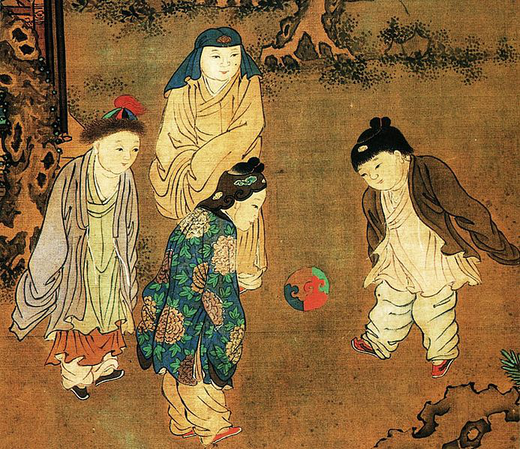
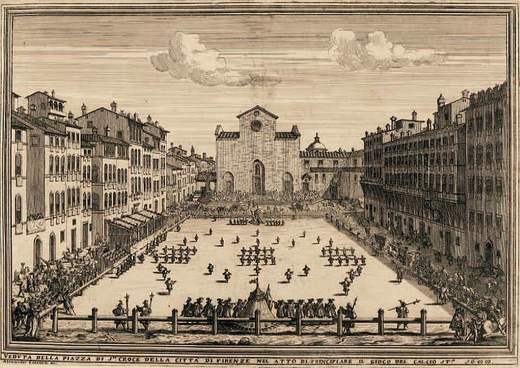
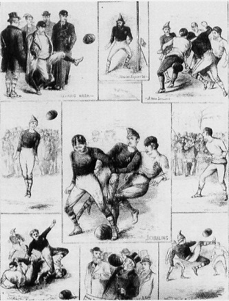

E sportág - mai tudásunk szerint - legősibb formája már a kínai forrásokban is szerepelt. Kr.e. 2000 körül Huang-ti császár a gyalogos katonák kiképzésében használta, hogy gyorsaságukat, ügyességüket és találékonyságukat fejlessze. A rabszolgák
kivételével az egész nép körében elterjedt a játék. A szabályokról annyit tudni, hogy a játéktér közepére egymástól kb. 4 méter távolságra két kb. 4 méter magas bambuszrudat állítottak, közéjük hálót feszítettek. A háló felső részére egy
60 cm átmérőjű nyílást vágtak, ez volt a "kapu". A háló két oldaláról rúgással, öklözéssel, fejelve, háttal vagy mellel érintve kellett a "kapuba" juttatni, nyitott tenyérrel viszont tilos volt érinteni. Magát a labdát nyolc bőrdarabból
varrták össze, tollal és állati szőrrel tömték ki. Kr.e. 2000 körüli időkből fennmaradt a labdarúgás 25 fejezetből álló kézikönyve is.

Japán hagyományok
Kínai mintára Japánban is megjelent e sport őse kemari néven. Jelentős különbség azonban, hogy itt kultikus szerepet játszott, kezdetben csak a főnemesség kiváltsága volt a játék, majd a miniszteri rangú hivatalnokok is részt vehettek benne.
A szabályok szerint 4-6 játékos kimonóban körbeállt a pályán, a feladat az volt, hogy a labdát lábbal minél tovább a levegőben tartsák.
A görög-római testkultúrában ismert volt a játék, de nem kapott kiemelt szerepet.
A középkorban Angliában és Franciaországban "tömeg-football" ill. "határlabdázás" néven találkozhatunk vele. E játék eredete a rontásűző mágia pogány
szokásaiban keresendő. Hitük szerint ha egy télutói vagy tavaszi napon a megrontásból származó veszedelmeket egy bőrbatyuba "gyömöszölik" és a falvak apraja-nagyja részvételével kirugdossák a faluból, akkor meg is szabadulnak ezektől.
A cél tehát az volt, hogy a labdában rejlő gonoszságot földjüktől minél távolabbra juttassák mielőtt az a rúgásoktól szét nem szakad. Hitük szerint, aki a legtöbbet árt a "labdának", vagyis a legnagyobbakat rúgja bele, az mentesül leginkább
a betegségektől. A XIV. században Angliában és Franciaországban is betiltották (1314, ill. 1320) a játékot durvasága miatt, gyakran emlegették "ördögi mulatságként", büntetésként pedig börtönnel fenyegették a futballozókat.
Ezzel
egy időben megjelent Firenzében a calcio, Európában az első körülhatárolt városi pályán zajló, mérkőzésvezető által irányított csapatjáték. Egy-egy csapat 27 főből állt, és a másik fél várát jelképező sátorba kellett belőni a labdát. A
játékosok szigorúan meghatározott rend szerint álltak fel: elől 15 csatár, a második sorban 5 fedezet, mögöttük 4 védő, a negyedik sorban megint 3 védő, akik közül a középső a kapus. Egyedül csak ő vehette a kezébe a labdát, a többiek
rúghatták vagy ököllel üthették. A bíró vigyázott a szabályok betartására és számolta a gólokat, a büntetőpontokat. A sátrak mellett zenekarok is voltak, zeneszó mellett zajlott a mérkőzés.

A modern labdarúgás
A mai értelemben vett labdarúgás az 1820-as években az angol diákok körében virágzott fel. A korábbiaktól annyiban mindenképp eltért, hogy tiltották a túlzott durvaságot, meghatározták a pálya nagyságát és a résztvevők számát. 1857-ben alapították
meg az első amatőr futballegyesületet, az FC Sheffieldet. Egy általánosan elfogadott szabályrendszer kidolgozásár végül 1862-ben került sor, majd 1863-ban az iskolák és a társadalmi egyesületek létrehozták a Football Associationt. A legfontosabb
szabályok közül néhány: 1. Gólnak számít, ha a labdát a kapuba juttatják anélkül, hogy kézben vitték vagy kézzel ütötték volna. 3. Lábbal csak a labdát szabad rúgni. 4. A játékosnak nem szabad a labdát érintenie, ha az a levegőben van.
8. Lesen van a játékos, mihelyt a labda elé kerül.

A XIX. század végéig megszülettek aztán a ma is oly ismerős szabályok, eszerint 1874-ben bevezették a büntetőrúgást, 1882-ben a partdobást, 1891-ben a tizenegyest, és egyben hálóval szerelték fel a kaput. 1878-ban jelent meg a játékvezető,
1891-ben a határbíró. 1895-ben adták ki a lényegében mai napig érvényes hivatalos játékszabályokat, ez lehetővé tette a játékosok tevékenységének összehangolását és a feladatok megosztását. Eleinte kilenc támadó játékos mellett egy hátvéd
és egy kapus állt a pályán. A támadó játék modernizálásával több védőt kellett hátra vonni, majd azóta még újabb és újabb felállások, játékstílusok alakultak ki. A labdarúgás a legtöbb országban háttérbe szorította az egyéb labdajátékokat.
Az első világbajnokságot 1930-ban rendezték. 1928-ban a francia Jules Rimet és Maurice Delaunay azzal az ötlettel állt elő, hogy a nemzeti válogatottak világbajnokságon mérjék össze az erejüket. Az ötlet két év múlva valósággá vált, 1930 júliusában
Uruguayban már össze is csaptak a különböző nemzetek csapatai. Ekkor Argentínát legyőzve a házigazdák lettek a világbajnokok.